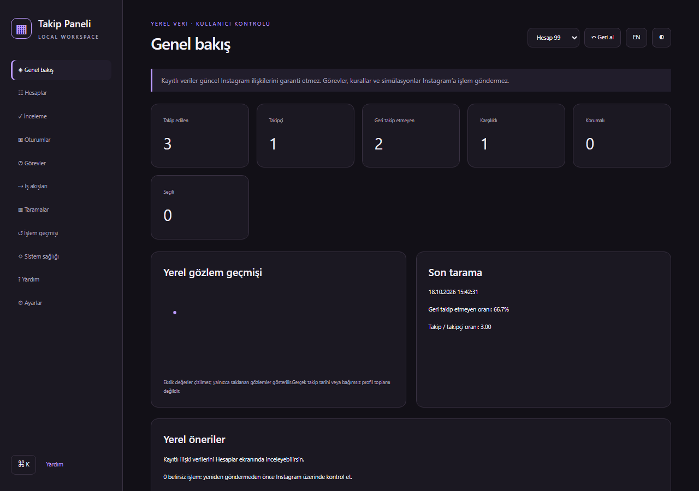
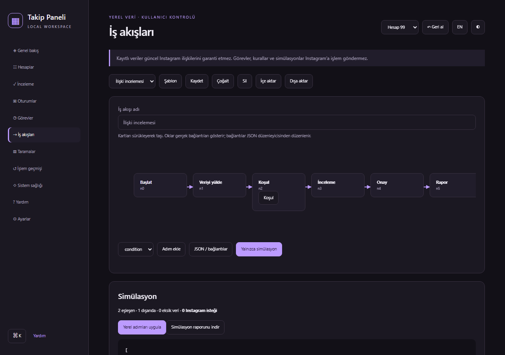

2.9.0 · Türkçe / English · Yerel veriler
Takip listen için
mor bir çalışma alanı.
Koruma listeleri, notlar, inceleme kuyruğu, tarama geçmişi, görevler ve kayıtlı veri üzerinde çalışan iş akışı simülasyonları.
Sürüm ve ZIP dosyaları →

Görseller otomatik tarayıcı testindeki sentetik hesapları gösterir.Chrome'a kurulum
- chrome ZIP dosyasını indir ve ayıkla.
- chrome://extensions → Geliştirici modu → Paketlenmemiş öğe yükle.
- İçinde manifest.json bulunan klasörü seç.
- Instagram'da eklentiyi aç; ▦ düğmesiyle yerel çalışma alanına geç.
Sonuçları açıkça ayırır
Ön kontrol, tek POST ve bağımsız ilişki doğrulaması kullanılır. HTML veya HTTP 200 tek başına başarı değildir. Belirsiz sonuçta kuyruk durur. Yerel iş akışları Instagram'a otomatik istek göndermez.

Yayın durumu
23 otomatik test paketi sentetik Instagram yanıtlarıyla geçti. Gerçek hesapta takip bırakma entegrasyonu, kaynak yeniden dağıtım izni ve Chrome Web Mağazası incelemesi ayrıca tamamlanmalıdır. GitHub sürümü mağaza onayı değildir.
Hazır paket asistana otomatik günlük göndermez. Veriler Chrome profilinde yerel saklanır. Ayrıntılar gizlilik politikasında.
Destek / hata bildirimi · Ayrıntılı kullanım ve mağaza yükleme rehberi